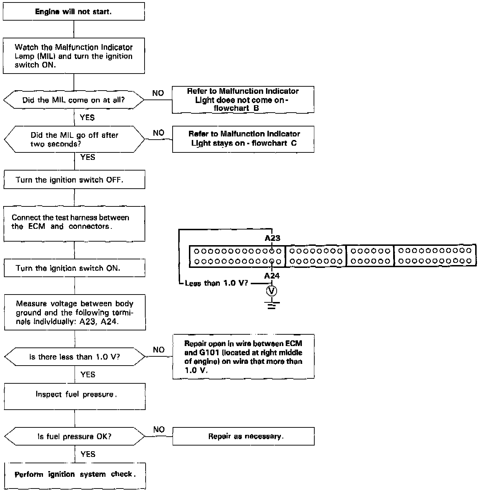
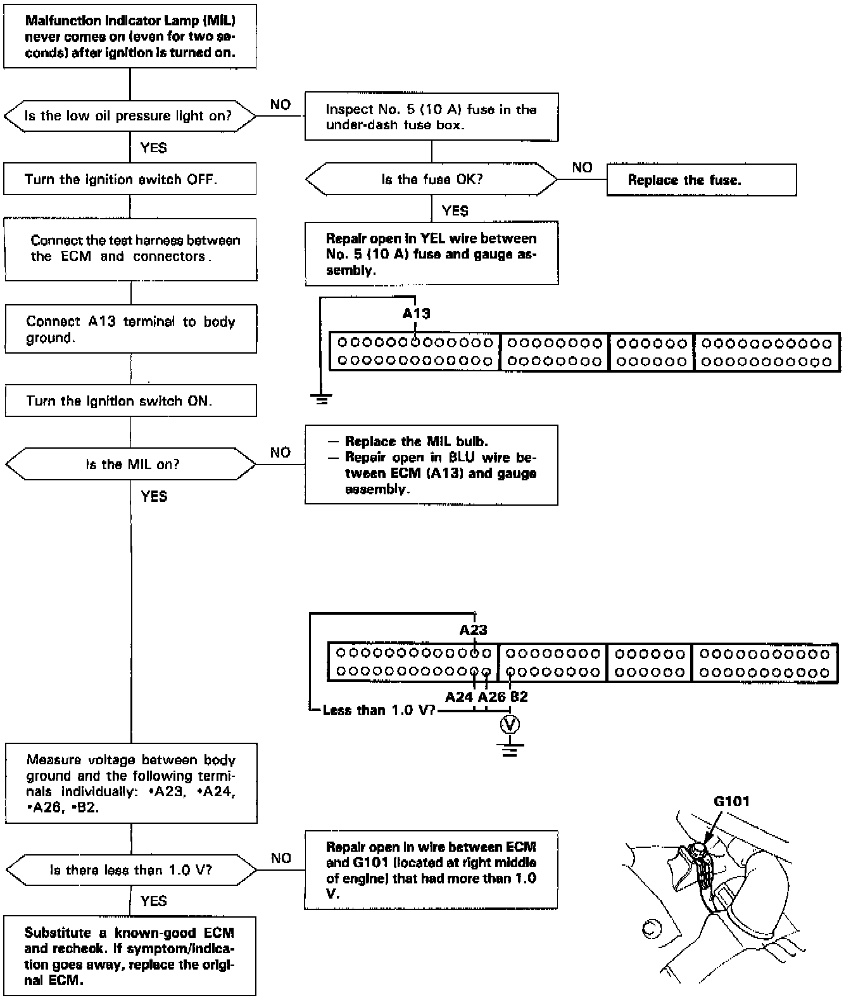
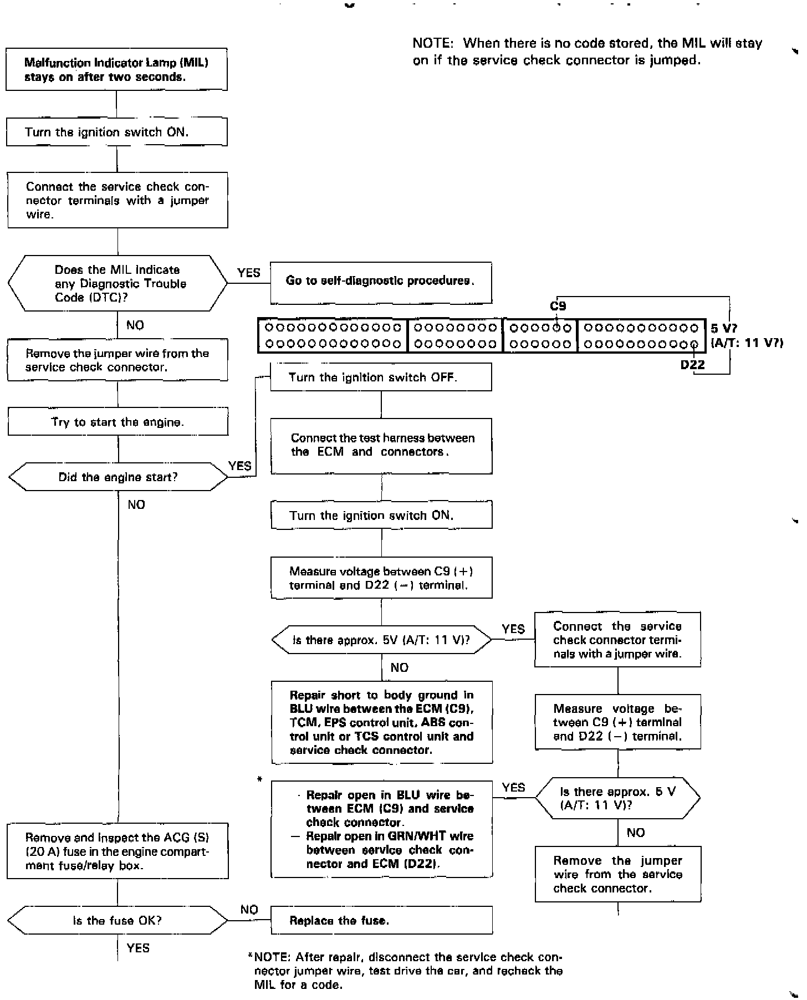
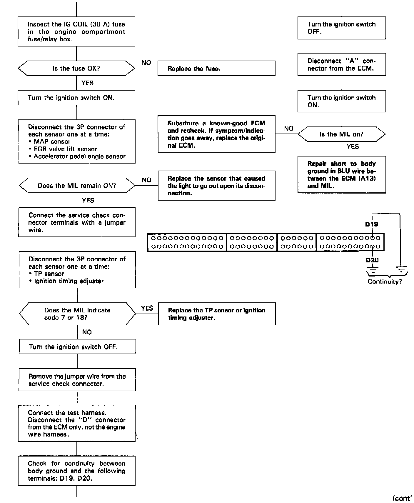
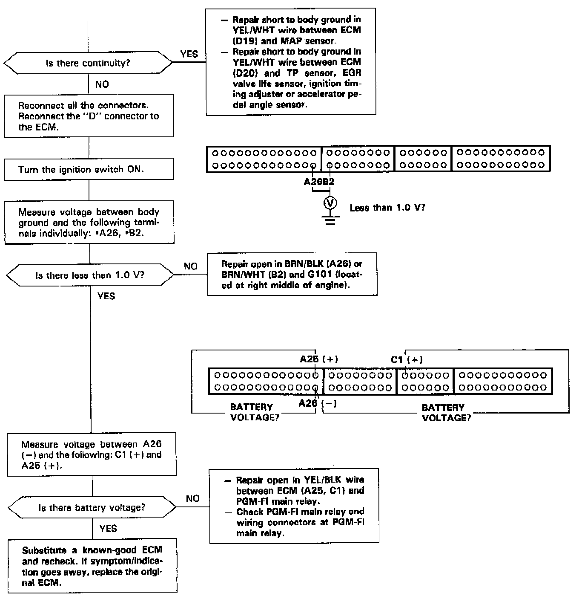

Troubleshooting Flowchart
INSPECTIONNOTE: If, after Performing circuit and individual component tests, it is determined that problem(so) may exist in the engine control module, It will be necessary to substitute the engine control module with a known good engine control module and retest as needed.
Follow the steps as shown in the Troubleshooting Flowcharts.

Troubleshooting flowchart A - engine will not start.

Troubleshooting flowchart B - malfunction indicator lamp does not come on.



Troubleshooting flowchart C - malfunction indicator lamp stays on.